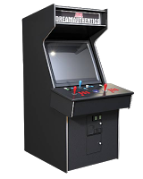

Traducción al español de “Como escribir un emulador de computadora” por Marat Fayzullin
Escribí este documento luego de recibir varios correos electrónicos de personas a las que les gustaría escribir un emulador de una u otra computadora, pero que no saben por donde empezar. Las opiniones y consejos contenidos en este articulo son únicamente mios y no deberían ser tomados como verdad absoluta. El documento trata principalmente sobre los llamados emuladores “interpretes”, contrario a los “compiladores”, pues no tengo mucha experiencia con técnicas de recompilación. Se proporcionan un par de enlences donde se puede encontrar información sobre estas técnicas.
Si considera que hace falta algo en este documento, o desea hacer una corrección, siéntase libre de enviarme un email con sus comentarios. NO respondo sin embargo a idioteces o solicitudes de imágenes ROM. Si conoce enlaces que pudiesen ser útiles aquí avíseme, lo mismo aplica para preguntas frecuentes que no se encuentran en el documento.
Este documento ha sido traducido al Japonés por Bero. También hay traducciones al Chino, cortesía de Shun-Yuan Chou, otra traducción al Chino por Jean-Yuan Chen. La traducción al Francés por Maxime Vernier. La nueva traducción al español por Daniel Campoverde [Alx741], y finalmente la traducción al Portugués de Brazil por Leandro.
Contenidos
Así que decidió escribir un emulador?, muy bien, en ese caso este documento podría ayudarle. Cubre algunas preguntas técnicas que las personas se preguntan sobre el tema. También provee algunas muestras sobre el el diseño interno de los emuladores que podría usar para guiarse en cierta medida.
General
- Qué puede ser emulado?
- Qué es un “emulador” y en que se diferencia de un “simulador”?
- Es legal emular hardware propietario?
- Qué es un emulador “interpretador” y por que es diferente de uno “recompilador”?
- Quiero escribir un emulador. Por dónde debo empezar?
- Qué lenguaje de programación debería usar?
- Dónde puedo obtener información del hardware a emular?
Implementación
- Cómo emular una CPU?
- Cómo manejo el acceso a la memoria emulada?
- Tareas cíclicas: qué son?
Técnicas de programación
- Cómo optimizo código C?
- Qué es low/high-endiness?
- Cómo hacer un programa portable?
Qué puede ser emulado?
Básicamente todo aquello que tiene un microprocesador dentro. Desde luego, solamente dispositivos ejecutando programas más o menos flexibles son interesantes de emular. Estos incluyen:
- Computadoras
- Calculadoras
- Consolas de vídeo juegos
- Vídeo juegos de Arcade
- etc.
Es necesario notar que se puede emular cualquier sistema de computo, incluso si es muy complejo (como por ejemplo una computadora Commodore Amiga). Aunque el rendimiento será muy bajo.
Qué es un “emulador” y en que se diferencia de un “simulador”?
La emulación es el intento de imitar el diseño interno de un dispositivo. Simulación es un intento por imitar las funciones del dispositivo. Por ejemplo: un programa imitando el hardware de Pacman árcade y ejecutando una ROM real de Pacman es un emulador. Un juego de Pacman escrito para su computadora, pero usando gráficos similares a los del juego de árcade real, es un simulador.
Es legal emular hardware propietario?
Aunque este tema está en el “área gris”, aparentemente es legar emular hardware propietario, siempre y cuando la información sobre este no haya sido obtenida por medios ilegales. Debería también estar consiente de que es ilegal distribuir ROM’s de sistemas (BIOS, etc.) con un emulador, si estos están bajo copyright.
Qué es un emulador “interpretador” y por que es diferente de uno “recompilador”?
Existen tres esquemas básicos usados para diseñar un emulador. Pueden también ser combinados para obtener mejores resultados.
Interpretación
El emulador lee el código emulado byte por byte, lo decodifica, y realiza los comandos adecuando en los registros emulados, memoria y I/O. El algoritmo general es el síguete:
while(CPUIsRunning)
{
Fetch OpCode
Interpret OpCode
}Las virtudes de este modelo incluyen la facilidad para depurar, portabilidad y facilidad de sincronización (se puede simplemente contar ciclos de reloj y enlazar el resto de la emulación a este conteo). La única y gran debilidad es el bajo rendimiento. La interpretación toma mucho tiempo de CPU y será necesaria una computadora veloz para ejecutar el código a una velocidad decente.
Recompilación estática
En esta técnica, se toma el programa emulado y se intenta traducirlo al código assembly de la computadora emuladora. El resultado generalmente será un ejecutable que se puede usar directamente en la computadora sin ninguna herramienta especial. Mientras que la recompilación estática suena muy bien, no siempre es posible. Por ejemplo: no se puede usar con código auto modificado (mutable) pues no existe forma de saber en que se convertirá al ejecutarlo. Para evitar estas situaciones, se puede intentar combinar esta técnica con un interprete o un recompilador dinámico.
Recompilación dinámica
La recompilación dinámica es esencialmente lo mismo que la estática, pero ocurre durante la ejecución el programa. En lugar de intentar recompilar todo el código a la vez, se realiza sobre la marcha cuando se encuentra una instrucción CALL o JUMP. Para incrementar la velocidad, esta técnica puede ser combinada con la recompilación estática. Se puede leer más sobre esta técnica en el Documento de Ardi, creadores de el emulador recompilador de Macintosh.
Quiero escribir un emulador. Por dónde debo empezar?
Para escribir un emulador, se debe tener un buen conocimiento general sobre programación y electrónica. Tener algo de experiencia con assembly es útil también.
- Seleccionar un lenguaje de programación
- Encontrar información sobre el hardware a emular
- Escribir u obtener un emulador de la CPU
- Escribir código de prueba para emular el resto del hardware, al menos parcialmente.
- En este punto, es útil escribir un pequeño depurador sobre el mismo emulador, de forma que permita detener la emulación y observar que está haciendo el programa. Se podría necesitar un desensamblador del sistema emulado o escribir uno si no existe.
- Intentar ejecutar programas en el emulador.
- Usar un desensamblador y depurador para ver como el programa usa el hardware y ajustar el código apropiadamente.
Qué lenguaje de programación debería usar?
Las alternativas más evidentes son C y Assembly. Aquí algunos pros y contras de cada uno:
Assembly
- Generalmente, produce código más veloz.
- Los registros de la CPU emuladora se puede usar directamente para almacenar registros de la CPU emulada.
- Varios opcodes pueden ser emulados con opcodes similares de la CPU emuladora.
- El código no es portable, no se puede ejecutar en una computadora con distinta arquitectura.
- Es mas difícil de depurar y mantener.
C
- El código puede hacerse portable
- Es relativamente sencillo depurar y mantener
- Diferentes hipótesis de como funciona el hardware real se puede hacer rápidamente
- C es mas lento que assembly puro.
Un buen conocimiento sobre el lenguaje elegido es necesario para escribir un emulador funcional, es un proyecto complejo y el código debe ser optimizado para funcionar lo más veloz posible. La emulación de computadoras NO es un proyecto con el cual se aprende un nuevo lenguaje de programación
Dónde puedo obtener información del hardware a emular?
Aquí hay una lista de lugares para revisar:
Grupos usenet
- comp.emulators.misc
- comp.emulators.game-consoles
- comp.sys./emulated-system/
- rec.games.video.classic
FTP
- Programación de consolas y juegos
- Hardware de juegos de Arcade
- Historia de la computación y emulación
WWW
Cómo emular una CPU?
Primeramente, si solamente necesita emular una CPU estandar Z80 o 6502, puede usar uno de los emuladores que he escrito. Aunque ciertas condiciones aplican. Para aquellos que desean escribir sus propios emuladores de CPU, proveo abajo el esqueleto de un emulador típico en C. En un emulador real, se debería saltar y agregar las partes que se desea.
Counter=InterruptPeriod;
PC=InitialPC;
for(;;)
{
OpCode=Memory[PC++];
Counter-=Cycles[OpCode];
switch(OpCode)
{
case OpCode1:
case OpCode2:
...
}
if(Counter<=0)
{
/* Check for interrupts and do other */
/* cyclic tasks here */
...
Counter+=InterruptPeriod;
if(ExitRequired) break;
}
}Primero asignamos los valores iniciales a contador counter de ciclos de la CPU, y el contador de programa PC:
Counter=InterruptPeriod;
PC=InitialPC;Counter contiene el numero de ciclos de CPU que quedan hasta la siguiente interrupción. Nótese que la interrupción no debería necesariamente ocurrir cuando el contador expira, se puede usar para varios otros propósitos, como sincronización de temporizadores, o actualizar la pantalla. Más sobre esto luego. El PC contiene la dirección de memoria desde la que la CPU emulada leerá el siguiente opcode. Luego de que los valores iniciales fueron asignados, se inicial el loop principal:
for(;;)
{Nótese que este loop también se puede implementar como:
while(CPUIsRunning)
{Donde CPUIsRunning es una variable booleana. Esto tiene ventajas, pues se puede terminar el loop en cualquier momento con CPUIsRunning=0. Desafortunadamente, revisar esta variable en cada pasada requiere tiempo de CPU, y debería ser evitado de ser posible. Además no implemente el loop así:
while(1)
{Porque, en este caso, algunos compiladores generarán código para revisar si 1 es true o false. Ciertamente no quiere que el compilador haga trabajo innecesario en cada pasada del loop. Ahora, cuando estamos en el loop, lo primero es leer el siguiente opcode y modificar el contador de programa:
OpCode=Memory[PC++];Nótese que mientras esta es la forma más simple y rápida de leer la memoria emulada, no siempre es la mejor. Una forma más universal de acceder la memoria se presenta más adelante en este documento. Luego de que se obtiene el opcode, se decrementa el contador de ciclos de la CPU. Tome en cuenta que algunos opcodes (como los saltos condicionales o llamadas a subrutinas) pueden tomar distintos números de ciclos, dependiendo de los argumentos. Esto se puede ajustar luego en el código. Ahora es momento de interpretar el opcode y ejecutarlo:
switch(OpCode)
{Es un error común pensar que switch() es ineficiente, pues se compila como if() ... else if() ...; Mientras que esto es verdad para un pequeño numero de casos, un switch() grande (100-200 o más casos) siempre se compila como una tabla de saltos, lo que es más eficiente. Existen dos alternativas para interpretar opcodes. La primera es hacer una tabla de funciones y llamar a la apropiada. La segunda es hacer una tabla de etiquetas, y usar goto. Mientra que este método es un poco más veloz que un switch(), solamente funcionará en compiladores que soporten “etiquetas pre computadas”. Otros compiladores no le permitirán crear un array de etiquetas. Luego de una interpretación exitosa de un opcode, es necesario revisar si son necesarias interrupciones. En este momento se puede realizar cualquier tarea que necesite ser sincronizada con el reloj del sistema.
if(Counter<=0)
{
/* Revisar interrupciones y hacer otras emulaciones aquí */
...
Counter+=InterruptPeriod;
if(ExitRequired) break;
}Estas tareas cíclicas se cubren luego en el documento.
Nótese que no asignamos simplemente Counter=InterruptPeriod, pero hacemos Counter+=InterruptPeriod, esto hace el conteo más preciso, pues pueden haber algunos números negativos de ciclos en Counter. También observe:
if(ExitRequired) break;Como es muy costoso revisar una salida en cada pasada del loop, solo lo hacemos cuando Counter expira, así saldremos de la emulación cuando ExitRequired=1, y no tomará mucho tiempo de CPU.
Cómo manejo el acceso a la memoria emulada?
La forma más simple de acceder a la memoria emulada es tratarla como un array de bytes (palabras, etc.). Acceder es entonces trivial:
Data=Memory[Address1]; /* Leer de Address1 */
Memory[Address2]=Data; /* Escribir en Address2 */Un acceso tan simple no siempre es posible por algunas razones:
- Memoria paginada
- La dirección de memoria puede ser fragmentada en paginas intercambiables (bancos). Esto se hace para expandir la memoria direccionable.
- Memoria reflejada
Un área de memoria puede ser accedida desde diferentes direcciones.
- Protección de ROM
- Algunos programas basados en cartuchos intenta escribir en la ROM y se reusa a funcionar si tiene éxito al hacerlo. Esto se hace por protección de copia.
- I/O mapeada en memoria
- Pueden existir dispositivos I/O mapeados en memoria en el sistema. Acceder a esas posiciones de memoria produce efectos especiales y deben ser rastreados.
Para solucionar estos problemas, se introducen unas funciones:
Data=ReadMemory(Address1); /* Leer de Address1 */
WriteMemory(Address2,Data); /* Escribir en Address2 */Todo el procesamiento especial como paginas de acceso, espejos, I/O, etc. Se realiza en estas funciones. ReadMemory() y WriteMemory() usualmente causan mucha sobrecarga en la emulación, pues se invoca con mucha frecuencia. Y por tanto, deben ser lo más eficientes posible. Aquí hay un ejemplo para acceder a memoria paginada:
static inline byte ReadMemory(register word Address)
{
return(MemoryPage[Address>>13][Address&0x1FFF]);
}
static inline void WriteMemory(register word Address,
register byte Value)
{
MemoryPage[Address>>13][Address&0x1FFF]=Value;
}Nótese el inline. Esto causará que el compilador coloque el código directamente, en lugar de hacer llamadas a la función. Si el compilador no lo soporta, intente hacer la función static. Algunos compiladores (como WatcomC) optimizarán funciones estáticas pequeñas haciéndolas inline. También tenga en mente que en muchos casos ReadMemory() es llamada muchas veces y con más frecuencia que WriteMemory(). Por lo tanto es importante implementar la mayor parte del código en WriteMemory(), dejando ReadMemory() pequeña.
Una nota sobre la memoria reflejada
Como lo dicho anteriormente, muchas computadoras tienen RAM reflejada donde un valor escrito en una posición aparecerá en otras. Mientras que esta situación puede ser manejada en ReadMemory(), es usualmente no deseable, pues ReadMemory() es llama con mucha más frecuencia que WriteMemory(). Una forma más eficiente es implementar memoria reflejada en WriteMemory().
Tareas cíclicas: qué son?
Las tareas cíclicas son cosas que deben ocurrir periódicamente en la maquina, como:
- Refrescar la pantalla
- Interrupciones VBlank y HBlank
- Actualizar temporizadores
- Actualizar parámetros de sonido
- Actualizar estado de joysticks/teclados
- etc.
Para emular estas tareas, se debe mantenerlas unidas a un cierto numero de ciclos de CPU. Por ejemplo: si la CPU corre a 2.5MHz y la pantalla usa una frecuencia de refrescamiento de 50Hz (vídeo PAL estándar), la interrupción VBlank debe ocurrir cada
2500000/50 = 50000 ciclos de CPUAhora, si se asume que la pantalla completa (incluyendo VBlank) es 256 lineas de alto y 212 de ellas son mostradas en la pantalla (otras 44 caen en VBlank), debemos hacer que el emulador refresque la pantalla cada
50000/256 ~= 195 ciclos de CPULuego de eso, se debe generar la interrupción VBlank y no hacer nada hasta terminar VBlank, por
(256-212)*50000/256 = 44*50000/256 ~= 8594 ciclos de CPUCalcular con cuidado los ciclos de CPU necesarios para cada tarea, y usar el máximo común divisor para InterruptPeriod y atar todas las tareas a este (no se deben ejecutar necesariamente cada expiración de Counter).
Cómo optimizo código C?
Primeramente, mucha de la eficiencia se puede lograr eligiendo las opciones de optimización del compilador. Basado en mi experiencia, seguir la combinación de opciones nos dará las mejores velocidades de ejecución:
Watcom C++ -oneatx -zp4 -5r -fp3
GNU C++ -O3 -fomit-frame-pointer
Borland C++Si encuentra mejores opciones para estos compiladores, por favor, déjeme saber.
Sobre los loop unrolling
Puede parecer útil usar la opción “loop unrolling” del optimizador. Esta opción intentará convertir los pequeños en piezas de código lineal. Mi experiencia muestra sin embargo que esta opción no produce mejoras en la eficiencia. Activarla puede también dañar su código en casos especiales. Optimizar código C es algo mas complicado que elegir las opciones del compilador, y generalmente depende de la CPU para la que se compila. Varias reglas generales aplican para todas las CPUs. No las tome como reglas absolutas, todo puede variar:
Use el profiler!
Ejecutar el programa con un profiler (GPROF viene a mi mente) puede revelar muchas cosas que jamas sospecharía. Encontrará que piezas insignificantes de código se ejecutan mucho mas frecuentemente que el resto y ralentizan todo el programa. Reescribir estas en assembly puede mejorar el programa.
Evite C++
Evite usar construcciones que lo fuercen a compilar su programa con un compilador de C++, use C plano. Compiladores C++ usualmente añaden más sobrecarga al código.
Tamaño de los enteros
Procure usar solamente enteros de la base del tamaño soportado por la CPU como int en lugar de short o long. Esto reduce el tamaño del código que el compilador genera para convertir entre diferentes longitudes de enteros. También puede reducir los tiempos de acceso a memoria, pues algunas CPUs trabajan más rápido cuando leen/escriben datos basados en el tamaño alineado al tamaño de los limites de direcciones.
Asignación de registro
Use tan pocas variables como sea posible en cada bloque y declare las más frecuentes como register. Esto tiene más sentido para CPUs con muchos registros de propósito general (PowerPC) que en los que tienen registros dedicados (Intel 80x86).
Desenvolver loops pequeños
Si tiene loops pequeños que se ejecutan pocas veces, es buena idea desenvolverlos manualmente en código lineal.
Desplazamiento vs multiplicación/división
Siempre use desplazamientos cuando necesite multiplicar o dividir para potencias de 2^n (J/128==J>>7). Se ejecutan mas rápido. También use AND para obtener el modulo (J%128==J&0x7F).
Qué es low/high-endiness?
Todas las CPU’s se dividen en clases, dependiendo de que como almacenen los datos en memoria. Mientras que hay algunas muy peculiares, la mayoría caen en dos clases:
High-endian
Almacenan los datos de forma que los bytes más altos de la palabra siempre aparece primero en la memoria. Por ejemplo, si almacena 0x012345678 la memoria será:
0 1 2 3
+--+--+--+--+
|12|34|56|78|
+--+--+--+--+Low-endian
Almacenan los datos de forma que los bytes más bajos de la palabra siempre aparece primero en la memoria. Por ejemplo, si almacena 0x012345678 la memoria será:
0 1 2 3
+--+--+--+--+
|12|34|56|78|
+--+--+--+--+Ejemplos típicos de CPUs high-endian son 6809, Motorola 680x0, PowerPC, Sun SPARC. CPUs low-endian como 6502 y sucesores 65816, Zilog Z80, la mayoria de los chips Intel (8080, 80x86), DEC Alpha, etc. Cuando se escribe un emulador, se debe estar consiente de el endianess de la CPU emulada así como de la emuladora. Digamos que quiere emular un Z80 (low-endian). Esto es, Z80 almacena sus palabras de 16 bites con el byte bajo primero. Si quiere usar una CPU low-endian como Intel 80x86 para esto, todo ocurre de forma natural. Pero si quiere usar una CPU high-endian como PowerPC, de repente hay un problema al colocar los datos de 16 bits en la memoria. Icluso peor si su programa debe funcionar en ambas arquitecturas, necesitará alguna forma de conocer el endiness. Una forma de manejar el problema del endiness es:
typedef union
{
short W; /* Acceso a palabra */
struct /* Acceso a byte... */
{
#ifdef LOW_ENDIAN
byte l,h; /* ...en arquitectura low-endian */
#else
byte h,l; /* ...en arquitectura high-endian */
#endif
} B;
} word;Como puede ver, una palabra puede ser accedida usando W. Cada vez que la emulación necesite acceder como byte separados deberá usar B.l y B.h lo que preserva el orden. Si su programa será compilado para varias plataformas, usted querrá probar que fue compilado con la opción correcta de endiness antes de ejecutar algo importante. Aquí hay una forma de probarlo:
int *T;
T=(int *)"\01\0\0\0\0\0\0\0\0\0\0\0\0\0\0\0";
if(*T==1) printf("Esta maquina es high-endian.\n");
else printf("Esta maquina es low-endian.\n");Cómo hacer un programa portable?
Por ser escrito…
Por qué debería hacer un programa modular?
La mayoría de los sistemas de computo son echos a partir de grandes chips, los cuales realizan ciertas tareas del sistema. Así existe una CPU, un controlador de vídeo, un generador de sonido, etc. Algunos de estos chips pueden tener su propia memoria y otro hardware. Un emulador típico debería repetir el diseño del sistema original implementando cada subsistema en un modulo separado. Esto hace la depuración más sencilla, pues todos los bugs se localizan en los módulos. Además, la arquitectura modular permite reusar módulos en otros emuladores. El hardware de computadora está bastante estandarizado, puede esperar encontrar la misma CPU o chip de vídeo en muchos modelos de computadoras. Es mas fácil emular el chip una vez que implementarlo una y otra vez para cada computadora usando ese chip.